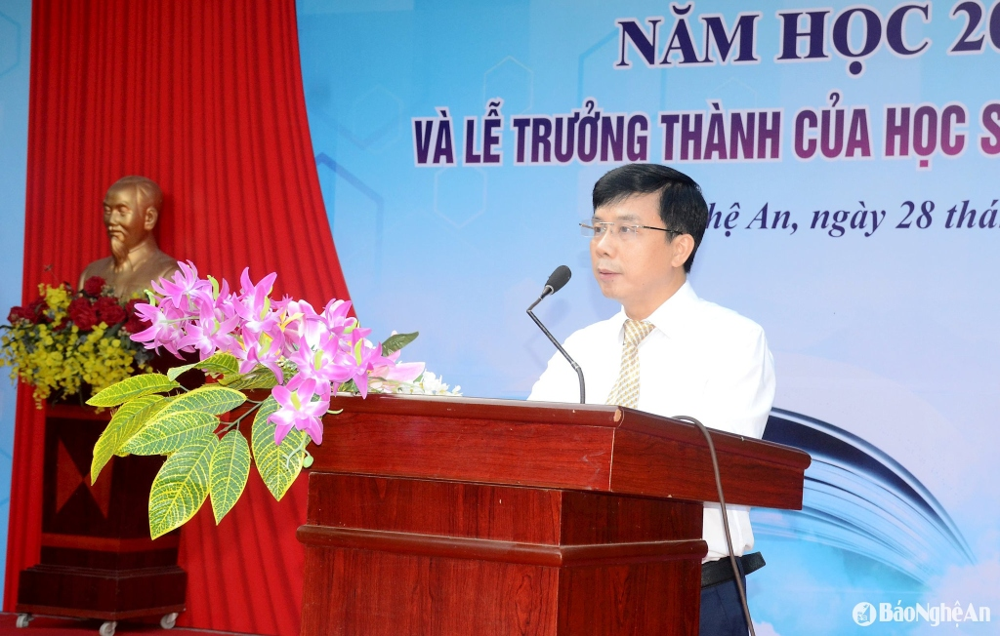
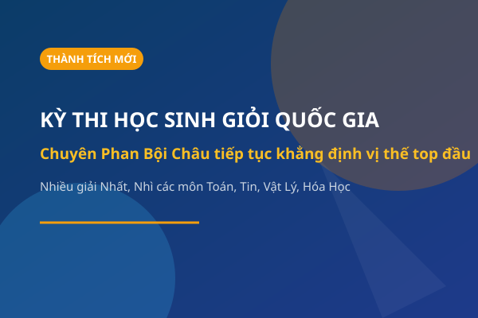
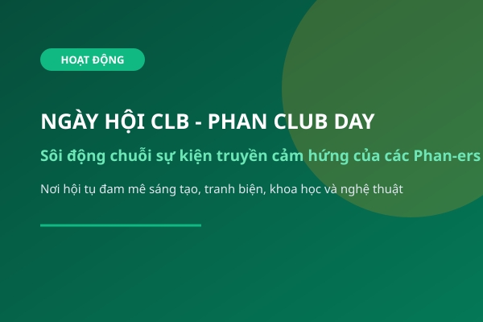

Sở Giáo dục & Đào tạo Nghệ An
THPT CHUYÊN PHAN BỘI CHÂU
Nơi nuôi dưỡng tài năng và khát vọng
Hotline tư vấn
(0238) 3844.897
Trường THPT Chuyên Phan Bội Châu tọa lạc tại trung tâm thành phố Vinh, tỉnh Nghệ An. Tiền thân là các lớp chuyên Toán đặc biệt được thành lập từ những năm tháng kháng chiến chống Mỹ cứu nước, trường chính thức mang tên chí sĩ yêu nước lỗi lạc Phan Bội Châu từ năm 1980.
Trải qua hơn nửa thế kỷ xây dựng và phát triển, trường đã trở thành "chiếc nôi" đào tạo hiền tài cho quê hương xứ Nghệ và đất nước, nhiều lần được Đảng và Nhà nước trao tặng các phần thưởng cao quý: Đơn vị Anh hùng Lao động thời kỳ đổi mới, Huân chương Độc lập, Huân chương Lao động hạng Nhất, Nhì, Ba.

Trái tim của khuôn viên trường - Ngọn hải đăng soi đường cho nhiều thế hệ học sinh
Hành trình hơn 60 năm vun đắp trí tuệ, kiến tạo tương lai
Trong khói lửa chiến tranh, lớp chuyên Toán đặc biệt đầu tiên của tỉnh Nghệ An được thành lập sơ tán tại các huyện nông thôn, đặt nền móng cho hệ thống giáo dục năng khiếu xứ Nghệ.
Ủy ban Nhân dân tỉnh Nghệ Tĩnh quyết định thành lập Trường PTTH Năng khiếu Phan Bội Châu, đặt tại thị xã Vinh, mở rộng thêm các lớp chuyên Vật lý, Văn học, Ngoại ngữ.
Quy mô trường lớp tiếp tục phát triển mạnh mẽ với đầy đủ các môn chuyên: Toán, Lý, Hóa, Sinh, Tin, Ngữ Văn, Lịch Sử, Địa Lý, Tiếng Anh, Tiếng Pháp, Tiếng Nga.
Học sinh Phan Bội Châu liên tục giành Huy chương Vàng, Bạc tại các kỳ thi Olympic Toán học (IMO), Vật lý (IPhO), Hóa học (IChO), Tin học (IOI) và Sinh học (IBO) thế giới.
Nhà trường vinh dự được Chủ tịch nước phong tặng danh hiệu cao quý “Anh hùng Lao động thời kỳ đổi mới”, hoàn thiện hệ thống phòng học chuyên dụng và phòng thí nghiệm hiện đại.
Xây dựng mô hình trường chuyên thông minh, tiên phong trong giáo dục STEM/AI, kết nối học bổng toàn cầu và phát triển toàn diện cả trí tuệ, kỹ năng và phẩm chất công dân toàn cầu.
Trở thành trường trung học phổ thông chuyên chất lượng cao hàng đầu Việt Nam và tiếp cận chuẩn mực giáo dục quốc tế; là cái nôi nuôi dưỡng những nhân tài có trí tuệ, bản lĩnh và khát vọng phụng sự đất nước.
Phát hiện, tuyển chọn và bồi dưỡng những học sinh có năng khiếu xuất sắc; trang bị nền tảng học vấn vững vàng, tư duy sáng tạo, kỹ năng công nghệ và phẩm chất nhân cách tốt đẹp để hội nhập thành công.
“TRÍ TUỆ – BẢN LĨNH – TRÁCH NHIỆM – KHÁT VỌNG”
Tự hào dòng máu cách mạng quê hương Bác Hồ và cụ Phan, luôn vươn lên chiếm lĩnh đỉnh cao tri thức bằng ý chí phi thường.
Đội ngũ cán bộ quản lý năng động, tâm huyết, lãnh đạo nhà trường vững bước trên hành trình đổi mới và hội nhập
Thạc sĩ - Bí thư Đảng ủy - Phụ trách chung & Chiến lược phát triển nhà trường

Thạc sĩ - Phó Bí thư Đảng ủy - Phụ trách Cơ sở vật chất, Phong trào & Thi đua
Thạc sĩ - Phụ trách Chuyên môn & Bồi dưỡng Đội tuyển HSG
Đáp ứng tối đa nhu cầu nghiên cứu, học tập và rèn luyện thể chất của học sinh

Diện tích rộng rãi với các dãy nhà cao tầng khang trang, sân trường rợp bóng cây xanh và vườn hoa tiểu cảnh thoáng mát.

Trang bị đầy đủ hệ thống máy móc, hóa chất, thiết bị hiện đại cho các môn Vật Lý, Hóa Học, Sinh Học và Tin học lập trình chuyên sâu.

Thư viện hàng chục nghìn đầu sách tài liệu chuyên khảo cùng nhà thi đấu thể thao đa năng, sân bóng rổ, bóng đá mini phục vụ rèn luyện.